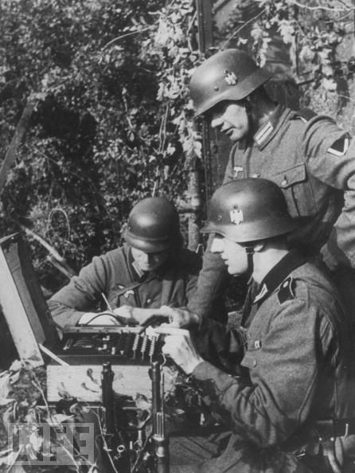
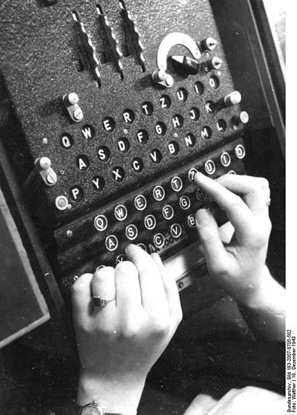

Turing... Alan Turing
Quizás no lo sepan, pero Alan Turing e Ian Fleming (el autor de las novelas de Bond, James Bond) trabajaron juntos.
Durante la Segunda Guerra Mundial Alan Turing dirigió el grupo Hut 8 en Betchley Park, en la sede del Government Code and Cypher School (GC&CS). El grupo Hut 8 estaba encargado de descifrar los códigos secretos creados con las máquinas Enigma usadas por la marina alemana. Esta famosa máquina, tenía un mecanismo de encriptación que se se consideraba impenetrable en ese tiempo.
La fotografía muestra a tres soldados alemanes usando uno de estos dispositivos.

La máquina Enigma es un dispositivo electromécanico. Desde el punto de vista de la “interfaz de usuario”, tiene un teclado donde se escribe el mensaje en texto llano y en la parte superior en un tablero luminoso se enciende las luces con las letras que componen el texto cifrado. El mecanismo es simétrico, de modo que para descifrar un texto se ejecuta la misma operación, se escribe en el teclado el texto cifrado y en el tablero luminoso se encienden las letras del texto desencriptado.

Un mecanismo de rotores y clavijas permiten configurar la máquina para operar, esta disposición inicial corresponde a la clave de encriptación. Estas claves, se cambiaban todos los días, y estaban registradas en libros de claves que eran distribuidos en las distintas unidades del ejército y la marina alemana.
No voy a describir el detalle del funcionamiento de Enigma, necesitaría un artículo bastante extenso para explicarla. Pueden investigar más detalles en este artículo de Wikipedia, aunque recomiendo la lectura del libro “Los Códigos Secr3tos” de Simon Singh
Una primera versión de la máquina Enigma fue descifrada por la inteligencia Polaca antes de que ese país fuera invadido por los alemanes en septiembre de 1939. Los alemanes agregaron más complejidad a la máquina, agregando nuevos rotores y clavijas. La cantidad de combinaciones posibles para poder determinar la clave de encriptación era astronómica.
Turing tenía la ventaja de su trabajo teórico ideando su famosa máquina universal de cómputo. Cuando se incorporó al equipo de descifradores de Betchley Park pudo, en pocas semanas, idear un mecanismo capaz de determinar las claves de las máquinas Enigmas usadas por el ejercito Alemán. Su trabajo permitió diseñar unas máquinas llamadas Bombas, que permitían calcular las claves en pocas horas.
Sin embargo, la máquina Enigma usada por la marina alemana era más sofisticada, y además este grupo aplicaban"buenas prácticas", que complicaban el descifrado. Por ejemplo, los criptoanalistas usaban mensajes estereotipados para poder determinar “puntales”, secuencias de textos que podían ser “adivinados” que permitían facilitar el trabajo de las bombas. Los marinos alemanes evitaban este tipo de mensajes estereotipados.
Durante meses el equipo de Turing no podía avanzar en el descifrado de los mensajes alemanes. Fue entonces que Ian Fleming sugirió la Operación Implacable. Un plan que pretendía simular el aterrizaje forzoso de un bombardero alemán, con la idea de que fuera rescatado por un barco alemán, con esto se esperaba robar los libros de claves de los alemanes. Turing estaba especialmente pendiente del éxito de esta operación, pues contar con estos libros permitiría mejorar sus mecanismos de descifrado. Aunque la Operación Implacable fue cancelada, finalmente se pudo obtener estos libros en otros ataques a submarinos y barcos meteorológicos alemanes.
La información obtenida por estos equipos de criptógrafos configuró un conjunto de datos de inteligencia conocidos como ULTRA.
Ultra le otorgó un alto grado de confianza al mando aliado. Se ha llegado a afirmar que Ultra permitió acortar la guerra en varios años. De acuerdo al historiador David Kahn el desciframiento de Enigma “salvó vidas. No sólo vidas aliadas y rusas, sino, al acortarla guerra también vidas alemanas, italianas y japonesas. Mucha gente viva tras la segunda guerra mundial no lo estaría si no hubiese sido por estas soluciones. Esta es la deuda que el mundo debe a los descifradores, ése es el valor humano culminante de sus triunfos.”
Después de terminada la guerra los británicos capturaron miles de máquinas Enigmas, las que regalaron a sus ex colonias, claro que nunca les revelaron que estas máquinas eran totalmente transparentes a sus criptoanalistas. Por años las ex colonias creyeron que la máquina enigma era indescifrable. Es por esta razón que las contribuciones de Bletchey Park estuvieron ocultas por más de 30 años. Es por esta razón que el mundo no supo de la contribución de Turing durante su vida.
En 1952 Turing denunció un asalto a su propiedad, durante la investigación reveló ingenuamente que mantenía una relación homosexual. La policía decidió detenerlo y acusarlo por “flagrante indecencia contraria a la sección 11 del Acta de Enmienda de Ley Penal de 1885”. El proceso fue publicado en los periódicos y Turing fue humillado públicamente. El gobierno británico le retiró sus acreditaciones de seguridad, se le prohibió trabajar en proyecto relacionados con el desarrollo del computador. Fue obligado a asistir a un siquiatra y someterse a un tratamiento hormonal, que le afectó físicamente, quedó impotente, obeso, desarrollo una ginecomastia (le crecieron pechos), y desarrolló un profunda depresión. En 1954 se suicidó comiendo una manzana envenenada con cianuro. El mundo perdió a una de sus mentes más brillantes, y el salvador de miles, talvez millones de vidas, todo por culpa de los prejuicios y la intolerancia.
Referencias:
-
Los Códigos Secretos, Simon Singh, Editorial DEBATE.
-
The Code Breakers, David Kahn.